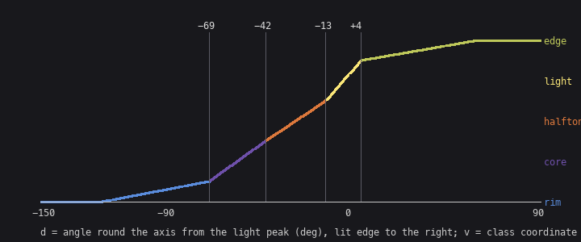

1. Read the trunk as numbers
Trigger: you have a master's scene as an indexed image, and you want his rule for a form, not your guess at it.
Ferrari's Living Worlds scenes survive as their original indexed data. Each pixel is a palette index, and the master-copy student had found that the index map is a form map: the same indices serve morning and afternoon, and only the palette changes. So an index is a class of surface orientation within a material. Reading his trunk as indices is reading his form classes directly.
Dump it as symbols
The pale trunk in Deep Forest (V09) is the cleanest sunlit cylinder in his scenes:

I didn't know which indices were the trunk, so first a census of a crop round it, then a symbol map (from the notebook; load() is in code/s0a_pale_trunk.py):
d = load('V09'); idx = d['idx']; pal = d['pal']
u = np.unique(idx[120:240, 370:392])
print([(int(i), tuple(int(c) for c in pal[i])) for i in u]) # which indices, which colours
sym = {132: 'c', 131: '4', 130: '3', 129: '1', 128: '2'}
for y in range(96, 252):
print('%3d ' % y + ''.join(sym.get(int(v), '.') for v in idx[y, 356:396]))
150 ............c444433311122...............
151 ............cc44343311212...............
152 ............cc44433131122...............
153 ............cc44341311212...............
154 ............cc44433311122...............
Sort the indices by their grey value and you have the rule:
| symbol | index | RGB | grey | class |
|---|---|---|---|---|
| c | 132 | (131,139,151) | 138 | reflected rim, cool (sky bounce) |
| 4 | 131 | (131,123,123) | 125 | core, warm grey |
| 3 | 130 | (159,147,147) | 149 | halftone |
| 1 | 129 | (191,175,175) | 179 | light |
| 2 | 128 | (175,163,163) | 166 | lit edge, falling back |
Things you can only see this way:
- Five classes in a fixed spatial order,
c 4 3 1 2, from the shadow edge to the lit edge. The painter's classical order: reflected light is lighter than the core beside it, and the lit edge falls back from the light. - The whole trunk spans 55 grey levels. It is held close.
- Seams are checkers of the two spatial neighbours, 1–2 px wide, with only three mixing levels (pure, 50%, pure). The rows repeat with period 8: a gradient fill.
- The dither follows space, not value. The core (125) mixes straight into the halftone (149), skipping the rim colour (138) that lies between them in value. A quantizer that mixes adjacent values would get this wrong.
Fit the classes to a lit cylinder
A 1-D profile fitted across his silhouette matches 87% of his pixels, but it can't be rotated to lie down. The useful version is geometric: give every pixel a normal on a cylinder, measure its angle round the axis from the light's peak, and map that angle to a continuous class coordinate through four breaks.
# code/tech.py
CHECK3 = np.array([[0.25, 0.75], [0.75, 0.25]]) # 3-level checker (Ferrari's trunk seams)
CLASS_STEPS = np.array([3, 2, 4, 6, 5]) # class -> wood step
CYL_BREAKS = np.array([-69.0, -42.0, -13.0, 4.0]) # degrees from the light peak (fitted, 89% exact)
def normal_plane_angles(N, V, L, T):
"""angle of N and of the light around the local axis T, both measured in the plane
perpendicular to T from the view direction; returns d = signed angle from the light peak,
oriented so that +d points toward the lit silhouette edge."""
def proj(a):
a = a - (a * T).sum(-1, keepdims=True) * T
return a / (np.linalg.norm(a, axis=-1, keepdims=True) + 1e-9)
Vp = proj(np.broadcast_to(V, N.shape))
B = np.cross(T, Vp)
Lp = proj(np.broadcast_to(L, N.shape))
phN = np.degrees(np.arctan2((N * B).sum(-1), (N * Vp).sum(-1)))
phL = np.degrees(np.arctan2((Lp * B).sum(-1), (Lp * Vp).sum(-1)))
sgn = np.where(phL >= 0, 1.0, -1.0)
d = (phN - phL) * sgn
d = (d + 180) % 360 - 180
return d, phL
def quantize_classes(v, mat=CHECK3, phase=(0, 0), class_steps=CLASS_STEPS):
H, W = v.shape
th = np.tile(mat, (H // mat.shape[0] + 2, W // mat.shape[1] + 2))
th = th[phase[0]:phase[0] + H, phase[1]:phase[1] + W]
lo = np.floor(v)
k = np.clip(lo + ((v - lo) > th), 0, len(class_steps) - 1).astype(int)
return class_steps[k], k
cylinder_classes(d, phL) is piecewise linear through the breaks: v = k + ½ at break k, running from 0 at the shadow silhouette to 4 at the lit silhouette. Because it's linear through every class, no zone is pure; the checker quantizer then mixes only spatially adjacent classes. That is the "dither follows space" rule for free.

The fit (code/s0a2_pipeline_copy.py) builds a cylinder cross-section on each row of his trunk, then runs coordinate descent over the four breaks, the light's azimuth and the checker phase, scoring exact index matches:
br = tech.CYL_BREAKS.copy(); az = 30.0; ph = (0, 0)
for it in range(3):
for j in range(5):
best = None
grid = np.arange(10, 70, 2) if j == 4 else br[j] + np.arange(-20, 21, 2)
for g in grid:
b2 = br.copy(); a2 = az
if j == 4: a2 = g
else: b2[j] = g
if not np.all(np.diff(b2) > 0): continue
for phx in ((0, 0), (1, 0), (0, 1), (1, 1)):
o, M = paint(a2, b2, phx); sc = score(o, M)
if best is None or sc > best[0]: best = (sc, g, phx)
...
It converges in two passes to 89% exact:

What the breaks say:
- The core starts about 20° past the geometric terminator.
- The halftone is a 30° band.
- The light class is a thin band at the peak.
The seams show "no pure zones" too: every class boundary is a checker running along the axis.
The trap I fell into first: thresholds on N·L and N·V. They reached 60–79% at best, because the classes don't sit at constant N·L. Fit in the space where the rule is simple, which here is the angle round the axis.
The honest limit of a copy
The critic's first round: both of these copies borrow his silhouette and background, so they test only the ramp, and a smooth cylinder is the easiest passage in the scene. That's right. So the second copy drew its own silhouette: V02's fallen dead tree, contre-jour.

Dumped the same way (# body, r rim), its rules are few:
- the body is one near-black class;
- every silhouette pixel facing the glow carries a 1-px maroon rim (
##ron each twig, a run along the trunk top); - twigs are 2–3 px and stay thick until the last third, kink every few pixels, and fork in V and Y crooks.
My sketch (an eight-point spline for the trunk top, sixteen twig gestures with base widths) is redrawn by those rules in code/s0b_fallen.py:
def rim(M):
"""the back-light wraps the whole silhouette on the glow side: every mass pixel whose right
neighbour or upper neighbour is open sky gets the rim -- on twigs that is the right-hand
pixel ('##r'), on the trunk a run along the top contour."""
P = np.pad(M, 1)
right_open = M & ~P[1:-1, 2:]
up_open = M & ~P[:-2, 1:-1]
return right_open | up_open
The silhouette IoU is 0.62. The language matches; the twig placement is a sketch, so this is not a blind match. Its lesson, the contre-jour rim, went straight into the renderer (lesson 2).
How to read your own master:
- Take a census of indices in a crop.
- Dump the crop as symbols.
- Sort the indices by value.
- Read the spatial order and the seam statistics.
- Fit a geometric rule in whatever coordinate makes it simple.
- Test the rule by copying a passage you had to draw yourself.